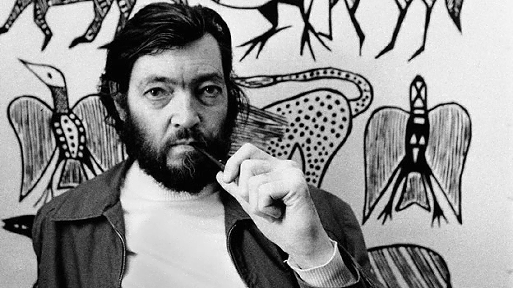

J.R.R. Tolkien
J.R.R.TOLKIEN, (John Ronald Renuel Tolkien). Nacío en sudáfrica el 3 de enero de 1892 y fallecio en 1973 en el 2 de septiembre . fue escritor , poeta , militar , filólogo , linguista y profesor.
Sofia Florencia Viccia Gutierrez
John Ronald Reuel Tolkien nació en Bloemfontein, la noche del domingo 3 de enero de 1892 Sus padres fueron Arthur Tolkien y Mabel Suffield. Se lo nómbro John por su abuelo. Luego dejaron africa cuando solo ténia 3 años de edad con su familia. Su padre permaneció en Africa por el negocio. Arthur Tolkien tenia intencion de reunirse con su familia en inglaterra , pero se enferma fiebre reumática y murió el 15 de febrero 1896. Su muerte deja a la familia sin ingresos, Por lo cual la madre de él decide llevar a sus hijos irse a vivir con su familia en Birmingham.
PRIMEROS
AÑOS
En el mismo año se mudaron a Sarehole. A Ronald le encantaba explorar el cercano bosque de la turbera de Moseley y la aceña de Sarehole, lugaren luego inspirarían paisajes de sus obras y la granja de su tía Bag End ( Bolsón Cerrado), nombre que saldría en el hobbit y señor de los anillos. En 1904, cuando Ronald tenía doce años, cuando su madre muere por causas de la diabete .Cuando es huerfano él con su hermano fueron criados por el padre Francis Xavier Morgan, un sacerdote católico.
NO TODO EL QUE DEAMBULA ESTÁ PERDIDO
J.R.R Tolkien
NO TODO EL QUE DEAMBULA ESTÁ PERDIDO
J.R.R Tolkien
ESTUDIOS
EN
OXFORD
Tolkien va Oxford para estudiar Filología Inglesa alentado por su tutor el padre Francis. De 1925 a 1945, Tolkien perteneció la cátedra Rawlinson y Bosworth en la Universidad de Oxford, enseñando anglosajón y, de 1945 a 1959, fue profesor de Lengua y Literatura inglesa en Merton. En la universidad de Oxford , Tolkien conoce y mantiene una amistad con el profesor y escritor C.S. Lewis ( autor de Las crónicas de narnia ), junto con Tolkien formaron club literario , los Inklings. Se reuníanlos viernes antes de comer en el pub Eagle and Child, y la noche de los jueves en las habitaciones de Lewis en el Magdalen College, para compartir obras q componían entre ellos.
ULTIMOS
AÑOS
Tolkien vuelve a Oxford, donde muere 21 meses después, 2 de septiembre de 1973, con 81 años, y fue enterrado en la misma tumba que su mujer. En su tumba estan representados con los nombres ‘’ Beren’’ y ‘’Lúthien’’, estos pertenecen una leyenda que sale en su obra El Silmarillion.